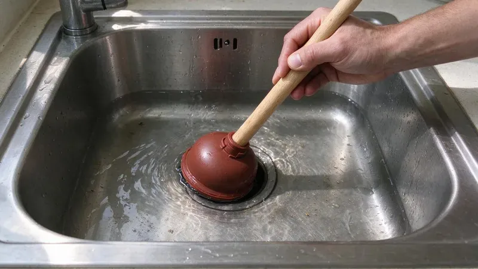

Why Kitchen Sinks Back Up
The kitchen drain takes more abuse than any other drain in the house. Grease and starch wash down warm, then cool and cling to the inside of the pipe. Over a year or two that coating narrows a 1-1/2 inch drain line down to roughly the width of your finger. Then one big rinse finds the limit.
The Usual Causes
Grease is the main one. Bacon fat and butter turn solid as they cool. Chasing grease with hot water just moves it a few feet down the line, where it hardens in the run behind the wall. Wipe pans with a paper towel first.
Garbage disposals grind food, but they do not make it disappear. Coffee grounds and eggshells settle in the trap like wet sand. Fibrous stuff such as celery and corn husks wraps around the disposal blades or forms a thick mat down in the trap. Pasta and rice swell after they go down.
A large share of Vermont homes rely on private wells, and well water here can range from soft to fairly hard depending on the bedrock.
Hard water leaves scale inside older galvanized and cast iron drains, and that rough surface catches grease faster than smooth PVC. A lot of homes built before the 1970s still have a galvanized drain arm behind the kitchen sink. Those pipes rust closed from the inside. No amount of drain cleaner will open them back up for long.
Dishwasher and Disposal Connections
A sink that backs up when the dishwasher drains is a clue. A dishwasher dumps a few gallons quickly, so any partial clog downstream sends that water into the sink basin. A new disposal with the knockout plug still in place will do the same thing. Check that first after a disposal swap.
Keeping the Line Clear
Prevention here is cheap. Keep a can for grease and toss it in the trash once it hardens. Run the disposal with a strong flow of cold water, and keep the water running for 15 seconds after the grinding stops. A basket strainer catches the rest.
Once a month, flush the line. Fill the sink with hot water and release it all at once. The sudden volume scours the trap and the drain arm behind the wall much better than a running faucet ever will. Do not pour boiling water into PVC drains, because repeated heat can loosen the joints. Hot tap water is plenty.
Quick Fixes for a Minor Clog
Start with a cup plunger, not the flange type used on toilets. With a double bowl, block the second drain with a stopper or wet rag so the pressure goes toward the clog instead of out the other side. Ten or fifteen firm strokes is usually enough. Leave the dishwasher off until it drains.
Next, pull the trap. Put a bucket under it, loosen the two slip nuts by hand, and clean the U-bend out. A lot of clogs are right there, in the first foot of pipe. With a clean trap, the clog is further in the wall, which calls for a quarter-inch hand auger.
Skip chemical drain cleaners. They rarely clear grease clogs and they sit in the trap when they fail. That leaves caustic water for whoever opens the line next, and it can damage older metal drains and the finish on some sinks. Enzyme cleaners are fine for maintenance.
When to Bring in a Plumber
Water rising in another fixture changes things. A tub that gurgles or a floor drain that bubbles as the sink drains puts the blockage in the main line rather than the kitchen branch. That takes a cable machine through a cleanout, or a hydro jetter for heavy grease. Do not keep running water.
Our techs at CKV Plumbing clear kitchen lines all over Vermont, and most kitchen calls are done in about an hour. We will run a camera if the line clogs again within a few months. The office number is (802) 209-5139. Tell the dispatcher whether the dishwasher or the disposal was running when it backed up.
Need a licensed plumber in Vermont?
CKV Plumbing answers 24/7 and offers same-day service across Vermont.